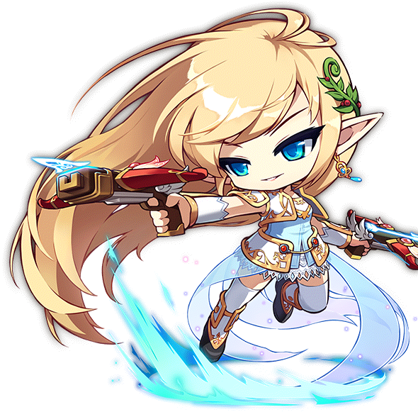
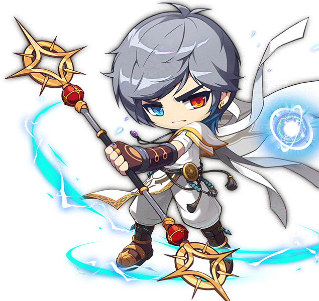
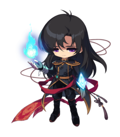

自我介紹
我的名字是郭家偉，就讀資管系一年級
我平常最常玩的遊戲就是新楓之谷，新楓之谷裡面故事內容深深吸引了我，很多肺腑人心的故事
這次我要來介紹的是楓之谷裡面最偉大的英雄團
英雄團人物
精靈遊俠
Mercedes

Type
FairyAbilit
- Cute Charm
- Competitive
- Friend Guard(DW)
Description
Jigglypuff (Japanese: プリン Purin) is a dual-type Normal/Fairy Pokémon introduced in Generation I.狂郎勇士
Aran

Type
Normal
Scratch Cat Pokémon
Ability
- Pickup
- Technician
- Unnerve (DW)
Description
Meowth (Japanese: ニャース Nyarth) is a Normal-type Pokémon introduced in Generation I.幻影俠盜
Phantom

Type
Water
Scratch Cat Pokémon
Ability
- Damp
- Cloud Nine
- Swift Swim (DW)
Description
Psyduck (Japanese: コダック Koduck) is a Water-type Pokémon introduced in Generation I.夜光
Luminous

Type
Tiny Turtle Pokémon- Torrent
- Rain Dish (DW)
Description
Squirtle (Japanese: ゼニガメ Zenigame) is a Water-type Pokémon introduced in Generation I.隱月
Eunwol

Type
Tiny Turtle Pokémon- Torrent
- Rain Dish (DW)